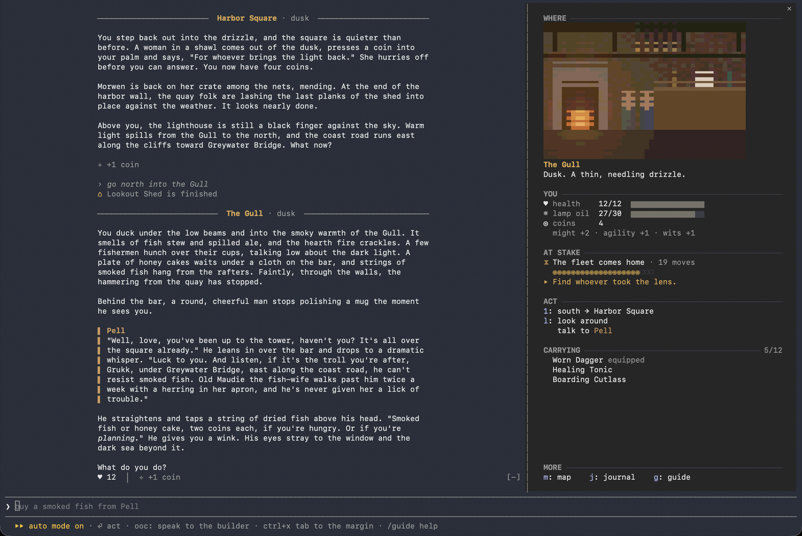
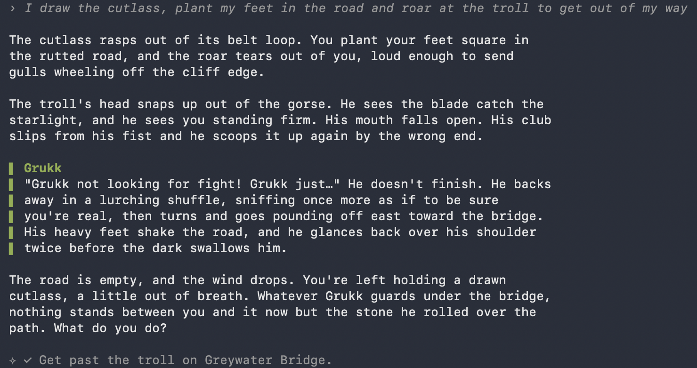
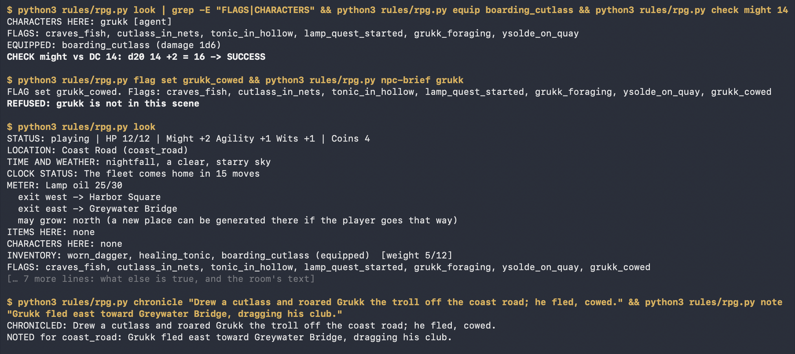
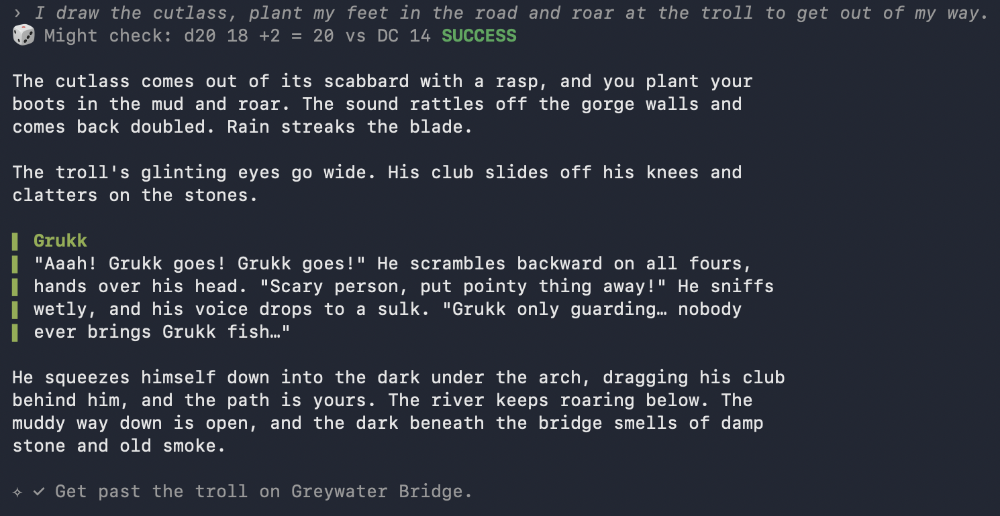

CodeRPG · guide
CodeRPG
A text adventure platform that explores AI-driven dynamic game management and expansion, using Claude Code as both the agent harness and the player interface (via mods).
CodeRPG turns Claude Code into a platform for text adventures. Claude is the game master, a Python script is the referee, and a mod redraws the terminal as a game. A world is a folder of Markdown files: two ship with the kit, you can write your own, or type one sentence and an agent writes a new one while you play. You type what you do in plain English at the normal prompt. Everything in the design follows one rule: Claude proposes, code decides.

1The idea
I wanted a game that an AI generates and manages on the fly, and that still plays fair. Not a chatbot improvising a story, but a real game: rules, a save file, consequences, and an AI that fills in what the author didn't write without being able to fudge what the author did.
Claude Code was already the harness I needed. It runs a model in a loop with tools, subagents, skills and hooks, and its new mod support lets a plugin redraw the interface. So there was nothing to build and nothing to host: the whole game runs on a Claude subscription, with Python 3 from the standard library and no other dependencies.
A text adventure is the smallest game that has all the hard problems: a world that must stay consistent, characters with their own minds, randomness that has to be fair, and content invented mid-play. Solve them here and the practices carry into bigger games.
What the harness supplies, and what each part became:
- The main session is the game master. It follows a turn-procedure skill and the standing orders in
CLAUDE.md, neither of which contains a single fact about any world. - Subagents are the cast and the world-builders. Each important character is an
npcagent with no tools. Aworldagent proposes small additions as JSON. An Opusworldsmithwrites whole new games in the background. - A permission rule lets the game master run one script,
rules/rpg.py, without prompts. That script is the referee: it rolls every die, checks every proposal and makes every change to the save. - Hooks keep order: one reminds the game master of the turn procedure on every in-game message, one refills the spending meter whenever Claude Code opens or resumes, and one fences the worldsmith into its draft folder.
- A mod, loaded with
claude --plugin-dir ./mod, is the screen. It reads the save and the referee's output and draws a game. It never writes a game file.
2Playing it
Every world plays the same way, because the engine, the interface and the rules belong to the kit and know nothing about any particular world. What a world supplies is its content: rooms, characters, items, quests, a clock, a look. Here's how one of the two shipped worlds, The Dark Lighthouse, plays.
You step off a trading boat at the fishing village of Saltmere at dusk. The lighthouse above the village has been dark for three nights, the fleet is due home through the rocks, and a countdown starts in the side pane. In the tavern, Pell the innkeeper gossips about the troll under Greywater Bridge. Up in the tower, Ysolde the keeper says the brass lens was stolen and she glimpsed a hunched shape heading east.
On the coast road a gull may steal a coin. At the bridge you find Grukk, a big lonely troll, guarding the shiniest thing in the whole world. Now you choose: bribe him with his favourite treat (honey cake or smoked fish, and it changes every game), scare him off with a Might check, or fight him. Each path sets its own flag, and each flag writes a different ending. Get the lens back to Ysolde before the fleet arrives and the beam sweeps out over the water. Miss the deadline and some boats don't come home.
What the player works with:
- Plain English. "Look around", "ask Pell about the troll", "give Grukk the honey cake", "attack". No command vocabulary, though the side pane offers clickable exits and actions.
- Runs.
/newgamestarts one. Add a seed to replay a run exactly, ordailyfor the world everyone gets that day./game <id>switches games; each keeps its own save. - Checks. Uncertain attempts roll d20 plus Might, Agility or Wits against DC 8, 12 or 16. Natural 20 always succeeds, natural 1 always fails.
- Combat. One exchange per attack: you swing, the foe swings back if still standing. Wounds persist. Fleeing is an Agility check, and failing it costs a free hit.
- Carrying. Items have weight; you carry 8 plus twice your Might (6 plus twice your Grit on the station).
- The clock. Every move is a tick. When it runs out, the quest's deadline flag is set and the ending follows.
ooc:in front of a message talks to Claude as a developer instead of the game master.- Instant commands.
/inventory,/map,/sheet,/budget,/sound,/guide: no Claude turn, no cost.
The two shipped worlds are deliberately different, to prove the kit doesn't care:
| The Dark Lighthouse | The Flooded Station | |
|---|---|---|
| Setting | Folk-tale fishing village, night | Half-flooded research station, near future |
| Problem | Stolen lens, fleet due home | Blown pump fuse, tide rising |
| Ways through | Bribe, scare or fight the troll | Get the fuse past a giant crab and restart the pump, or talk the last scientist into leaving |
| Stats, money, meter | Might, Agility, Wits; coins; lamp oil | Grit, Reflex, Know-how; credits; power |
| Size | 6 rooms, 4 characters, 6 items, 1 quest with 3 branches | 6 rooms, 3 characters, 5 items, 1 quest with 2 branches |


Three ways to get more worlds:
- Write one. Add a folder under
games/with aworld.mdand its rooms, characters, items and quests, followingrules/WORLD-GUIDE.md. Run the checker, then/game <id>and/newgame. - Ask for one.
/newworld a haunted train crossing the steppesends an agent to write a complete world in the background while you keep playing (section 5). - Let one grow. Every run can add people, places and things to the world it's in, and some of them persist into later runs (section 5).
3One turn, under the hood
Type "ask Ysolde about the lens" and this is what happens before the story appears. None of it is visible: the mod hides every tool call and shows a waiting line in the game's voice instead.
- A hook fires. It appends a reminder to the message: this is an in-game action, run it with the
gm-turnskill. (It also tells the game master how a cursed message came out.) - Read state. The game master runs
rpg.py look. The script prints status, exits, who and what is here, flags, and the room's text with the conditions already applied. A plain move skips this and runsmovedirectly. - Read content. Characters, items and quests the action touches are read with
rpg.py show, never by opening files.showstrips the sections whose conditions don't hold, and a character's## GM onlysection stays with the game master. - Resolve. The game master picks one command per intent:
move,take,check wits 12,attack grukk,use healing_tonic. Each runs once; the result stands. AREFUSED:line means nothing happened. - Voice the cast. Minor characters are played by the game master from their file. Ysolde has her own agent:
rpg.py npc-brief ysoldebuilds what she knows, wants and remembers, and a freshnpcsubagent is spawned with the brief, the last few lines and what just happened. It replies withSAY,INTENTandREMEMBER. The game master applies the intent only if the character's rules allow it. - Record. Small facts the narration established (
rpg.py note), one line for anything significant (chronicle), the character's memory (remember), flags only when content says so. - Narrate, last. Two to four paragraphs, second person, present tense, each speaker's line starting with their name. The mod draws that as story, builds a change line from the save (health, coins, items, objectives), and updates the pane.
One real turn, both sides. The player typed "I draw the cutlass, plant my feet in the road and roar at the troll to get out of my way." This is what they saw:

And this is every rules command the game master ran during that turn, with what each printed:

4Why it can't cheat
An LLM game master will, left to itself, roll a 17 when the story needs one and remember the troll as dead when he isn't. CodeRPG takes those choices away from it. Claude keeps everything that needs judgment or words; code keeps everything that must be fair or consistent.
- Code rolls, Claude narrates. Every roll, check, attack, wound and heal goes through
rpg.py, which prints a plain-text result the game master must narrate as it stands. Dice come from the run's seed, so a named seed replays the same rolls in the same order. - One save, one writer.
state/save.jsonis the single source of truth. Only the script writes it, atomically, with a version number and migrations. If anything Claude remembers disagrees with the save, the save wins. - Three things kept apart.
games/<id>/is content, never edited during play.rules/is mechanics and never names a room, character or item.state/is what happened. Each can change without breaking the others, and a new world is just a new folder. - Flags are the story's facts. Branching lives in the content as conditions:
exits: down: trolls_hollow (if grukk_friend or grukk_cowed),## If grukk_defeated. The game master sets a flag only when a content file says to. Defeating someone sets<id>_defeatedautomatically;has_<item>andmet_<character>are computed. - Characters are contained. An NPC agent sees only its brief: its file minus the
## GM onlysection, plus the## Ifsections that hold now and its memory of the player (at most 6 short lines). It has no tools and doesn't loadCLAUDE.md. It proposes; the game master checks the proposal against the hidden rules and applies it with the script, or doesn't. If an NPC contradicts the save, the save wins. - Numbers never come from a model. Anything a subagent invents gets its stats from fixed tiers: a
weapondoes 1d6, atoughfoe has 12 HP, prices run 1 to 6 coins. - A checker refuses broken worlds.
rpg.py validatechecks every reference, that every flag a condition uses can actually be set by something, that every command written into content is real, and that every curse has a cure. A--kit-completemode lists what a full world needs (5 to 8 reachable rooms, agent characters, a maker, a build spot, two ways through the quest, a curse, a side scene), and worlds the worldsmith forges must pass it before they're installed.
5A world that changes
The first rule I wrote for the game master was "never invent anything." It made the game honest and dead. The rule now is: nothing is invented freely, but a subagent may propose, the script checks, and whatever passes is stored in the save and is as real as authored content for the rest of the run. Variety comes from two sources: dice choosing among options the author wrote, and that checked channel for things the author didn't.
What the dice decide, per run
- A seed, named,
daily, or drawn for you. Same seed, same game: same stats, variants, clock and dice. - Rolled stats within ranges the world file sets.
- Variants: one flag picked per line. What the troll craves; where the cutlass and the spare tonic are hidden.
- Encounters on arrival in a room: a table rolls
2 in 6, an entry applies its effect (coins -1,hurt 1d2,gain healing_tonic),(once)entries fire once a run. They can wound, never kill. - The clock: the fleet comes home after 2d6+12 moves; the tide peaks after 2d4+10. Time of day follows it; weather changes every 5 moves.
What the world agent proposes
One pipeline: rpg.py world-brief <kind> writes a brief (tone, public knowledge, where you are, every name in use, the JSON shape), the world agent answers with JSON, rpg.py generate validates it or refuses with a reason, and what passes is stored.
- Extras: the dockhand the story only mentioned becomes a minor person with a name.
- Rooms: a free direction off any room can grow a new place, onto a free map square, at most 2 generated rooms deep.
- Items and side quests, with stats from tiers. A side quest may touch only its own
side_flags, so it can't shortcut the main story. - World turns: every 5 moves (normal preset) the agent spreads rumors and moves generated people. Major characters act on their plans: Ysolde walks down to the quay or bars her door; Grukk goes foraging and rolls a boulder over the path. Close by, you notice; far off, you hear it as a rumor.
- A run allows 16 generated things in all (normal preset).
What the player grows
- Makers and builders. Describe an order to Morwen the net-mender or Bucket the scrap drone; the agent shapes it within their trade, the tier sets its stats, you pay, it's yours. A builder at a build spot builds a place you describe; it joins the map 3 moves later and a rumor spreads so people start using it.
- Promotion. A generated person you talk to 3 times is promoted to their own agent with their own memory of you, for this run and later ones. The journal marks them ★.
- Side scenes. Two agent characters in the same place can play a short scene with each other (Grukk begging Ysolde to let him hold the lens) if you take it up. It sets no flags.
- The library. Everything generated or made (side quests excepted) outlives the run. A new game brings back the places you built and the people you befriended, each remembering one line about you, and the world agent may reuse a fitting old entry instead of inventing one.
- New worlds.
/newworld <a sentence>spawns the Opus worldsmith in the background while you keep playing. It writes a complete game folder, runs the checker on it until it passes, and you hear when it's ready. If a world is interrupted partway,/newworldoffers to finish it, start a new one instead, or throw it away. APreToolUsehook lets it write only inside its draft and run only the checker, denying everything else silently so no permission prompt ever lands in the player's game.


6What it costs
A living world is extra model calls, and on a subscription those are a shared budget. So playing the game as written is free: every game master turn, every rules command, and the authored characters speaking through their agents. Only the extras have a price, and the price is an in-game resource: lamp oil in the Lighthouse, power on the station. It sits in the status band and the pane, warns when low, and refills each time Claude Code is opened or resumed in the folder. When it's empty, the extras stop and the game as written plays on.
| Extra | Points |
|---|---|
| Generating something new (person, place, item, side quest) | 2 |
| A world turn | 2 |
| Something made to order | 2 |
| Something built to order | 3 |
| Bringing something back from the library | 1 |
| A generated person getting their own agent | 2 |
| A side scene | 2 |
| A whole new world | Not on the meter: it costs more than a whole meter, so only the owner's switch and the player's confirmation gate it |
One point is roughly one extra round of game master work. The script charges when it writes the brief, after every check that could refuse, so a refused extra costs nothing. The owner picks a preset per game and can override any switch with tools/settings.py, which the game master can't run:
| Preset | Meter | Character agents | World turns | Generated things per run |
|---|---|---|---|---|
| thrifty | 10 | Off; the game master voices everyone | Off | 6, extras, rooms and items only |
| normal | 30 | On | Every 5 moves, with plans | 16 |
| rich | 60 | On | Every 4 moves, with plans | 24 |
The prices are estimates, so /budget also shows what the session really used: tokens per play turn, weighted as the API prices them, split by the storyteller, the characters, the world agent and the worldsmith, with ooc: development turns kept separate. It also shows how far the session moved the subscription's 5-hour and weekly usage limits, and keeps the last 10 sessions so a change can be compared before and after. That's the figure for checking a price, or a speed change, against reality.
7The skin
The mod is a Claude Code plugin of TypeScript hooks that Claude Code runs itself, so there's nothing to install. Each hook steps in where Claude Code is about to draw something (a reply, a tool call, the spinner, the prompt hint) and draws the game's version instead, or nothing. It only ever reads: the save, the referee's printed output, and its own per-session store. Start a message with ooc: and it stands aside; Claude Code looks like itself again.
| Claude Code shows | In play it becomes |
|---|---|
| Claude's reply | The story: plain prose, 72 columns, centered beside the pane, revealed a paragraph at a time; speakers set beside a keyline in their color under their name; a thin rule with the place name on arrival; a title card at the start and an ending card at the finish |
| Tool calls, file reads, agent spawns | Hidden, except what the referee reports as rolls, encounters and new things, one line each in a dice tray: 🎲 Might check: d20 16 +1 = 17 vs DC 14 SUCCESS |
| Spinner and turn timer | A waiting line in the game's voice, naming the stage of the turn ("Grukk considers your words"), with a chime; no timer |
| Your message | Dim, after a quiet › |
| Prompt hint and mode labels | The game's hint; labels hidden |
| Nothing | A status band, a side pane, instant commands, sound |

The rest of what it adds:
- The change line. Under any turn that changed anything, one dim line:
✧ −2 ♥ · +5 coins · gained Brass Lens · ✓ objective. It's built from the save as the turn found it and left it, not from the prose, so it's the record you can trust. - The margin. A pane in six sections: Where (a room picture, the place, time and weather), You (health, any foe, the meter, coins, stats), At stake (the clock, objectives, curses), Act (exits on keys 1 to 9, look around, talk to each person present, each filling the prompt for you), Carrying, and More (map, journal, guide, each taking over the pane). It docks itself on wide terminals;
/sheetopens it otherwise. - Per-game styling with no code. Each game's
look.jsonsets its palette, stat names, currency, section labels, spinner phrases and sounds. The script copies it into the save, so the mod draws each game differently without knowing which it is. - Room pictures as a 44-by-14 mosaic of half-block characters, decoded into the save by the script, with a terrain default for rooms that have none.
- Animation on the terminal's frame clock: the title card types itself out, dice tumble, health bars drain and flash, damage rises and fades, water ripples on the map, the accent color shifts with the time of day.
- Curses on screen. Your message is redrawn as it came out (reversed, mirrored, cut short, or with a phrase tacked on) and the cast reacts to those words; the game master still knows what you meant.
- A clean start.
/newgameand a game switch run/clearfirst, so each game starts lean. The save holds everything that matters. - Keeping the game master's notes off the page. Models like to narrate their own work: "Settling in beside Old Hob now." The mod holds each turn's text until the turn ends, shows only the narration, and strips stray progress notes from it with a set of patterns. Every new shape seen in play becomes a test, alongside story lines that must survive the filter.
What a mod can't do today, for anyone building one: restyle the prompt's ❯, bind Esc, or hide the permission-mode label in front of the hint; submit a prompt on the player's behalf (pane buttons fill the box, the player presses Enter); keep story styling across a resumed session; or stream narration mid-turn (text is held until the turn ends so the game master's working notes can't leak, then revealed a paragraph at a time).
Testing runs at two levels. One script runs 100 mod tests, 67 rules-engine tests and the content checker. Above that, tools/play.py drives a real Claude Code session in a simulated terminal: it types moves on a schedule, captures every frame the terminal draws, and searches them for anything that must never show, such as rpg.py leaking into the story. It runs in a scratch copy of the project, so test turns never touch a real save.
8What carries over
The game is deliberately small; the framework is the point. These are the practices it settled, and they don't depend on the genre.
- Code decides, the model narrates. Give the model a referee it must call, and make the referee's output the only thing it may narrate. Fairness stops being a prompt-engineering problem.
- Propose, then check. Let agents invent, but through a brief, a fixed shape, a validator and fixed stat tables. Refusals are free; whatever passes is canon.
- One save, one writer. A single state file, written by one program, beats any amount of "remember that" in a prompt.
- Content, rules, state: three folders. The engine never names a room; the world never contains a formula; a new game is a new folder.
- Fresh agents, small briefs. One spawn per exchange, no tools, no project instructions, a brief built from the character's file and a few lines of memory. Characters stay in character because they can't see anything else.
- Validate worlds like code. A checker that catches unsettable flags, dead commands and uncurable curses makes AI-written content safe to install.
- Budget the extras in the fiction. Charge model calls as lamp oil, let the owner set the preset, and measure real usage so the prices can be corrected.
- Let the harness be the UI. With mods, the agent harness is also the screen: no front end, no API loop, and the player's terminal is the game.